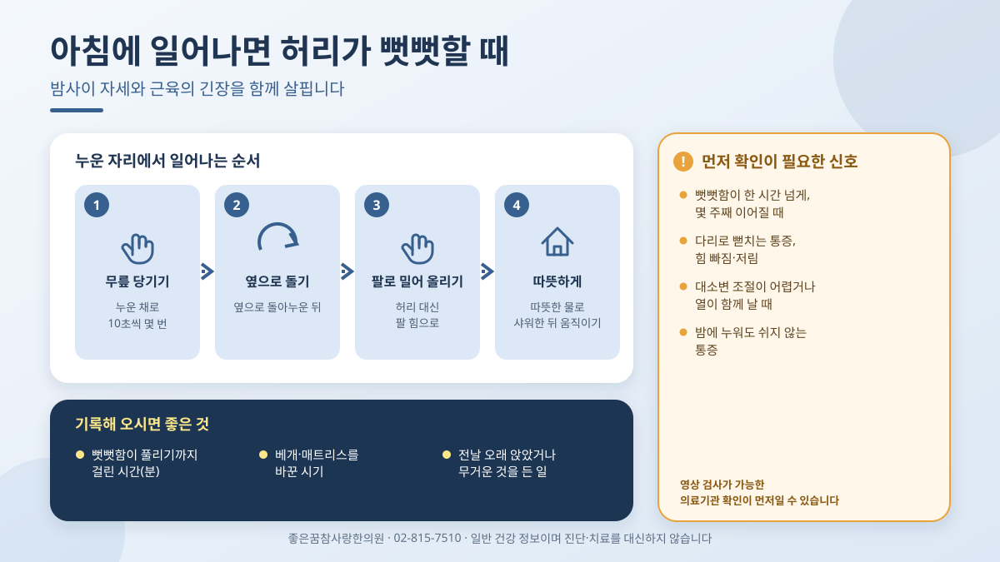
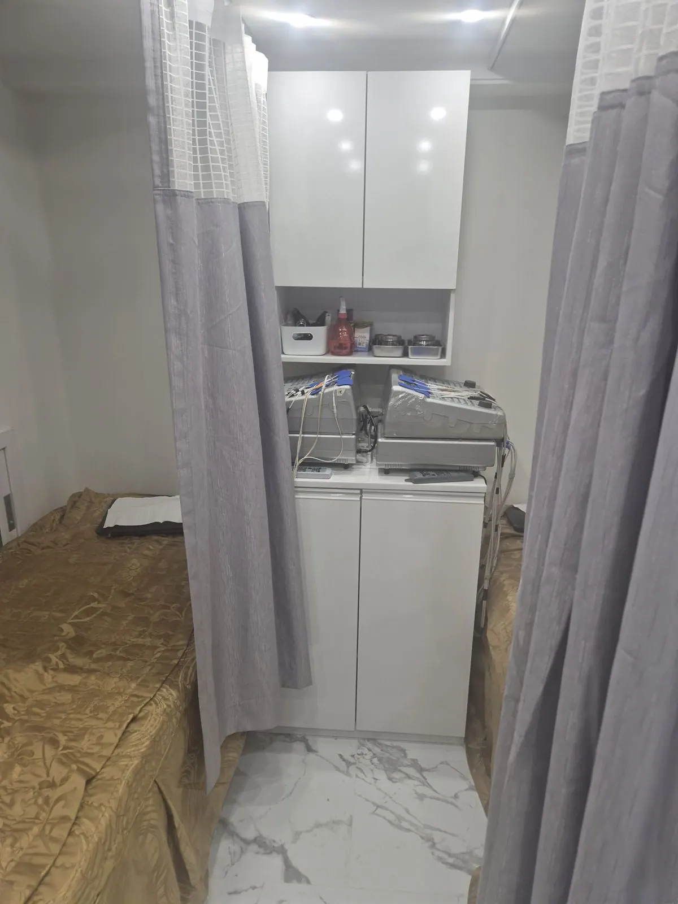

아침 허리 뻣뻣함은 밤새 같은 자세로 있던 근육과 관절이 굳었다가 움직이며 풀리는 경우가 많아, 몇 분 가는지와 움직이면 풀리는지를 먼저 묻고 잠자리와 낮 자세를 함께 살핍니다.
여쭙는 것
- 뻣뻣함이 몇 분 정도 이어지나요?
- 움직이면 풀리나요, 오히려 더 아픈가요?
- 자는 자세와 베개, 매트리스는 어떤가요?
생활에서 해 볼 것
- 일어나기 전 누운 채로 무릎을 가슴 쪽으로 천천히 당겨 10초씩 몇 번 풀어 주기
- 침대에서 일어날 때 옆으로 돌아누운 뒤 팔로 몸을 밀어 올리기
- 너무 푹 꺼지거나 너무 딱딱한 잠자리인지 점검하기
한의원에서 함께 살필 것
- 아침에 일어날 때 허리가 뻣뻣한 경우 밤사이 자세와 근육의 긴장을 함께 살핍니다.
- 오래 누워 있으면 허리가 더 뻐근한 경우 수면 자세를 함께 살핍니다.
- 낮에 움직이면 풀리지만 아침에 다시 뻣뻣한 경우 생활 속 움직임을 함께 살핍니다.
먼저 확인이 필요한 신호
- 아침 뻣뻣함이 한 시간 넘게 이어지고 몇 주째 계속되는 경우
- 다리로 뻗치는 통증이나 힘 빠짐, 저림이 함께 있는 경우
- 대소변 조절이 어렵거나 열이 함께 나는 경우

아침에 허리가 뻣뻣하다가 세수하고 몇 걸음 걷고 나면 풀린다면, 밤사이 오래 움직이지 않은 근육과 관절이 굳어 있던 경우가 많습니다. 다만 뻣뻣함이 한 시간 넘게 가거나 몇 주째 점점 심해진다면 다른 원인도 확인해야 합니다. 얼마나 오래 가는지, 움직이면 풀리는지가 첫 번째 단서입니다.
왜 이런 불편이 생길 수 있나요
- 자는 동안에는 몸을 거의 움직이지 않아 허리 주변 근육과 관절이 굳은 채로 아침을 맞을 수 있습니다.
- 너무 푹 꺼지거나 너무 딱딱한 매트리스, 맞지 않는 베개는 밤새 허리를 한쪽으로 기울게 만들 수 있습니다.
- 전날 오래 앉아 있었거나 무거운 것을 들었다면 그 피로가 다음 날 아침 뻣뻣함으로 나타나기도 합니다.
- 한의학에서는 몸이 찬 편인지, 잠이 깊은지도 아침 몸 상태와 함께 살핍니다.

먼저 이렇게 여쭙니다
- 뻣뻣함이 몇 분 정도 이어지나요?
- 움직이면 풀리나요, 오히려 더 아픈가요?
- 자는 자세와 베개, 매트리스는 어떤가요?
- 전날 오래 앉아 있었거나 무거운 것을 든 일이 있나요?
- 엉덩이나 다리 쪽으로 당기는 느낌이 함께 있나요?
일상에서 먼저 해 볼 수 있는 것
- 일어나기 전 누운 채로 무릎을 가슴 쪽으로 천천히 당겨 10초씩 몇 번 풀어 주기
- 침대에서 일어날 때 옆으로 돌아누운 뒤 팔로 몸을 밀어 올리기
- 너무 푹 꺼지거나 너무 딱딱한 잠자리인지 점검하기
- 낮에 한 시간에 한 번 일어나 허리를 펴 주기
- 아침에 따뜻한 물로 샤워해 몸을 데운 뒤 움직이기

한의원에서 함께 살필 수 있는 경우
- 아침에 일어날 때 허리가 뻣뻣한 경우 밤사이 자세와 근육의 긴장을 함께 살핍니다.
- 오래 누워 있으면 허리가 더 뻐근한 경우 수면 자세를 함께 살핍니다.
- 낮에 움직이면 풀리지만 아침에 다시 뻣뻣한 경우 생활 속 움직임을 함께 살핍니다.
좋은꿈참사랑한의원에서는 먼저 아침의 모습과 하루 생활을 충분히 듣고, 허리를 굽히고 펴는 동작을 함께 확인합니다. 필요하다고 판단될 때 초음파로 아픈 부위를 살핀 뒤 침·약침·추나 등 상태에 맞는 방법을 정하고, 귀가 전에는 아침에 해 볼 동작과 다음에 확인할 점을 알려 드립니다.
이렇게 기록해 오시면 상담이 쉬워집니다
- 아침 뻣뻣함이 풀리기까지 걸린 시간(몇 분)
- 자는 자세, 베개와 매트리스를 바꾼 시기
- 전날 오래 앉았거나 무거운 것을 든 일
- 복용 중인 약과 최근 받은 검사 결과

이런 증상은 먼저 확인이 필요합니다
- 아침 뻣뻣함이 한 시간 넘게 이어지고 몇 주째 계속되는 경우
- 다리로 뻗치는 통증이나 힘 빠짐, 저림이 함께 있는 경우
- 대소변 조절이 어렵거나 열이 함께 나는 경우
- 밤에 누워도 쉬지 않는 통증이 있는 경우
복용 중인 약은 처방한 의사와 상의 없이 줄이거나 끊지 않습니다. 다리에 갑자기 힘이 빠지거나 대소변을 가누기 어렵다면 119나 가까운 응급실로 바로 가세요.
한눈에 보는 표
| 구분 | 핵심 |
|---|---|
| 여쭙는 것 | 뻣뻣함이 몇 분 정도 이어지나요? 움직이면 풀리나요, 오히려 더 아픈가요? |
| 생활에서 해 볼 것 | 일어나기 전 누운 채로 무릎을 가슴 쪽으로 천천히 당겨 10초씩 몇 번 풀어 주기 침대에서 일어날 때 옆으로 돌아누운 뒤 팔로 몸을 밀어 올리기 |
| 한의원에서 함께 살필 것 | 아침에 일어날 때 허리가 뻣뻣한 경우 밤사이 자세와 근육의 긴장을 함께 살핍니다. 오래 누워 있으면 허리가 더 뻐근한 경우 수면 자세를 함께 살핍니다. |
| 먼저 확인이 필요한 신호 | 아침 뻣뻣함이 한 시간 넘게 이어지고 몇 주째 계속되는 경우 다리로 뻗치는 통증이나 힘 빠짐, 저림이 함께 있는 경우 |
자주 묻는 질문
아침 허리 뻣뻣함은 한의원에서 어떻게 살피나요?
뻣뻣한 시간, 자세, 생활 습관, 통증이 퍼지는 방향을 묻고 몸의 움직임을 보며 생활 전체와 함께 살핍니다.
아침에 스트레칭을 해도 되나요?
아프지 않은 범위에서 천천히 하는 가벼운 동작을 권합니다. 통증이 심해지면 멈추세요.
새 매트리스로 바꿔야 하나요?
정답이 정해져 있지 않아서 지금 불편한 점을 먼저 묻고 생활 속에서 조절할 수 있는 부분부터 살핍니다.
뻣뻣함이 한 시간 넘게 가면 어떻게 하나요?
여러 관절이 함께 뻣뻣하거나 몇 주째 이어진다면 류마티스내과 등에서 먼저 확인해 보시길 권합니다.
이 글은 일반적인 건강 정보이며 개인의 진단이나 치료를 대신하지 않습니다. 증상이 있거나 복용 중인 약이 있다면 진료를 통해 확인하세요. 치료 효과는 개인마다 다를 수 있습니다.
작성 기준: 일반적으로 알려져 있는 건강 정보를 참고해 정리했습니다(대표원장 감수). 증상 기록은 1~2주 동안 하루 1회, 비슷한 시간에 적어 오시면 지난 상태와 비교하기 쉽습니다.
좋은꿈참사랑한의원은 재진 때 지난번 이야기부터 이어서 여쭙니다. 진료시간과 예약은 오시는 길에서 확인하세요.